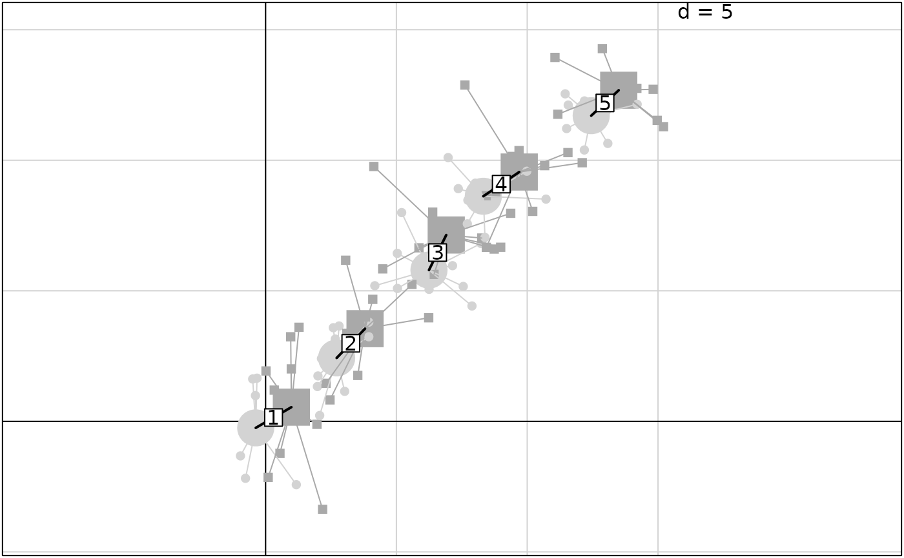

Scatterplot of two sets of coordinates and a partionning into classes
s.match.class.RdPerforms a graphical representation of two sets of coordinates (different colors and symbols) and a partitionning into classes
Usage
s.match.class(df1xy, df2xy, fac, wt = rep(1/nrow(df1xy), nrow(df1xy)),
xax = 1, yax = 2, pch1 = 16, pch2 = 15, col1 = rep("lightgrey",
nlevels(fac)), col2 = rep("darkgrey", nlevels(fac)), cpoint = 1, label =
levels(fac), clabel = 1, cstar = 1, cellipse = 0, axesell = TRUE, xlim =
NULL, ylim = NULL, grid = TRUE, addaxes = TRUE, cgrid = 1,
include.origin = TRUE, origin = c(0, 0), sub = "", csub = 1.25, possub =
"bottomleft", pixmap = NULL, contour = NULL, area = NULL, add.plot = FALSE)Arguments
- df1xy
a dataframe with the first system of coordinates
- df2xy
a dataframe with the secocnd system of coordinates
- fac
a factor partitioning the rows of the data frame in classes
- wt
a vector of weights
- xax
a number indicating which column should be plotted on the x-axis
- yax
a number indicating which column should be plotted on the x-axis
- pch1
if
cpoint> 0, an integer specifying the symbol or the single character to be used for plotting points- pch2
if
cpoint> 0, an integer specifying the symbol or the single character to be used for plotting points- col1
a color for symbols
- col2
a color for symbols
- cpoint
a character size for plotting the points, used with
par("cex")*cpoint. If zero, no points are drawn- label
a vector of strings of characters for the couple labels
- clabel
if not NULL, a character size for the labels, used with
par("cex")*clabel- cstar
a number between 0 and 1 which defines the length of the star size
- cellipse
a positive coefficient for the inertia ellipse size
- axesell
a logical value indicating whether the ellipse axes should be drawn
- xlim
the ranges to be encompassed by the x axis, if NULL they are computed
- ylim
the ranges to be encompassed by the y axis, if NULL they are computed
- grid
a logical value indicating whether a grid in the background of the plot should be drawn
- addaxes
a logical value indicating whether the axes should be plotted
- cgrid
a character size, parameter used with par("cex")*
cgridto indicate the mesh of the grid- include.origin
a logical value indicating whether the point "origin" should belong to the graph space
- origin
a fixed point in the graph space, for example c(0,0) for the origin of axes
- sub
a string of characters to be inserted as legend
- csub
a character size for the legend, used with
par("cex")*csub- possub
a string of characters indicating the sub-title position ("topleft", "topright", "bottomleft", "bottomright")
- pixmap
a
pixmapobject- contour
a dataframe with 4 columns to plot the contour of the map : each row gives a segment (x1,y1,x2,y2)
- area
a dataframe of class 'area' to plot an areal map
- add.plot
if TRUE, add the plot to the current graphic device
Author
Stéphane Dray stephane.dray@univ-lyon1.fr
Examples
xy <- data.frame(matrix(rnorm(100), 50, 2))
xy[, 1] <- xy[, 1] + rep(seq(0, 12, by = 3), rep(10, 5))
xy[, 2] <- xy[, 2] + rep(seq(0, 12, by = 3), rep(10, 5))
fac <- gl(5, 10)
xy2 <- xy + matrix(rnorm(100), 50, 2) + 1
if(adegraphicsLoaded()) {
mat <- rbind(xy, xy2)
minmat <- apply(mat, 2, min)
maxmat <- apply(mat, 2, max)
lag <- 0.1 * abs(minmat - maxmat)
xli <- c(minmat[1] - lag[1], maxmat[1] + lag[1])
yli <- c(minmat[2] - lag[2], maxmat[2] + lag[2])
g1 <- s.class(xy, fac, ellipseSize = 0, col = rep("grey45", nlevels(fac)), xlim = xli,
ylim = yli, plabels.cex = 0, plot = FALSE)
g2 <- s.class(xy2, fac, ellipseSize = 0, col = rep("grey75", nlevels(fac)), xlim = xli,
ylim = yli, plabels.cex = 0, plot = FALSE)
g3 <- s.match(g1@stats$means, g2@stats$means, xlim = xli, ylim = yli, plines.lwd = 2,
psub.text = "xy -> xy2", plot = FALSE)
g4 <- do.call("superpose", list(g1, g2))
g4@Call <- call("superpose", g1@Call, g2@Call)
g4 <- do.call("superpose", list(g4, g3))
g4@Call <- call("superpose", g4@Call, g3@Call)
g4
} else {
s.match.class(xy, xy2, fac)
}
